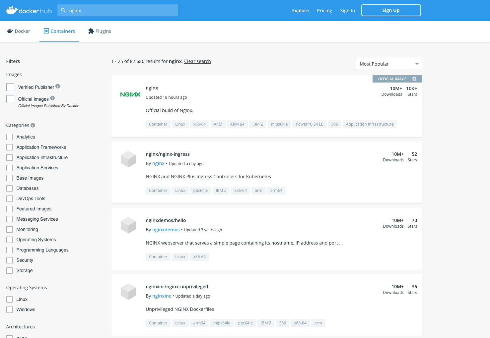

Run a dockerized service
Run a basic http server in a docker container¶
Let's deploy a simple web server using nginx.
First of all, let's search on Docker Hub for an already available image.
We can use the search command as follows:
docker search nginx
You will get something like the following output:
NAME DESCRIPTION STARS OFFICIAL
nginx Official build of Nginx. 20157 [OK]
nginx/nginx-quic-qns NGINX QUIC interop 1
nginx/nginx-ingress NGINX and NGINX Plus Ingress Controllers fo… 94
nginx/nginx-ingress-operator NGINX Ingress Operator for NGINX and NGINX P… 2
nginx/nginx-prometheus-exporter NGINX Prometheus Exporter for NGINX and NGIN… 43
nginx/unit This repository is retired, use the Docker o… 63
nginx/unit-preview Unit preview features 0
bitnami/nginx Bitnami container image for NGINX 193
rapidfort/nginx RapidFort optimized, hardened image for NGINX 15
kasmweb/nginx An Nginx image based off nginx:alpine and in… 8
ubuntu/nginx Nginx, a high-performance reverse proxy & we… 116
chainguard/nginx Minimal Wolfi-based nginx HTTP, reverse prox… 2
dockette/nginx Nginx SSL / HSTS / HTTP2 3
jitesoft/nginx Nginx on alpine linux 0
docksal/nginx Nginx service image for Docksal 0
gluufederation/nginx A customized NGINX image containing a consu… 1
okteto/nginx 0
objectscale/nginx 0
intel/nginx 0
circleci/nginx This image is for internal use 2
bitnamicharts/nginx 0
vmware/nginx 2
rancher/nginx 2
linuxserver/nginx An Nginx container, brought to you by LinuxS… 217
redash/nginx Pre-configured nginx to proxy linked contain… 2
Tip
The docker search command returns the following image information:
- Repository names
- Image descriptions
- Stars - these measure the popularity of an image
- Official - an image managed by the upstream developer (e.g., the fedora image managed by the Fedora team)
- Automated - an image built by the Docker Hub's Automated Build process
In alternative, you can make a similar search on the Docker Hub Web site:

Let's download the official image using the docker image pull command:
docker image pull nginx
Using default tag: latest
latest: Pulling from library/nginx
e4fff0779e6d: Pull complete
2a0cb278fd9f: Pull complete
7045d6c32ae2: Pull complete
03de31afb035: Pull complete
0f17be8dcff2: Pull complete
14b7e5e8f394: Pull complete
23fa5a7b99a6: Pull complete
Digest: sha256:447a8665cc1dab95b1ca778e162215839ccbb9189104c79d7ec3a81e14577add
Status: Downloaded newer image for nginx:latest
docker.io/library/nginx:latest
In order to list the images downloaded on your host, you can use the command:
docker image ls
REPOSITORY TAG IMAGE ID CREATED SIZE
nginx latest 5ef79149e0ec 2 weeks ago 188MB
ubuntu latest edbfe74c41f8 4 weeks ago 78.1MB
hello-world latest d2c94e258dcb 16 months ago 13.3kB
Let's have a look at the image with the commands we have already seen in the previous section:
docker image inspect nginx
1 2 3 4 5 6 7 8 9 10 11 12 13 14 15 16 17 18 19 20 21 22 23 24 25 26 27 28 29 30 31 32 33 34 35 36 37 38 39 40 41 42 43 44 45 46 47 48 49 50 51 52 53 54 55 56 57 58 59 60 61 62 63 64 65 66 67 68 69 70 71 72 73 74 75 76 77 78 79 80 81 82 | |
We can see that the nginx version in our container will be 1.27.1, the service will be listening on port 80 and the command that will be executed at the container start is nginx -g daemon off;.
This is a useful exercise, but in general you will find these information in the description of the image on Docker hub.
Creating a daemonized container¶
In addition to the interactive containers, we can create longer-running containers.
Daemonized containers don't have the interactive session we've used in our previous example and are ideal for running applications and services. Most of the containers you're likely to run will probably be daemonized.
Let's start a daemonized container now.
docker container run -d --name nginx nginx
Note
The -d flag tells Docker to detach the container to the background.
The --name option allows to set a name for your container
Instead of being attached to a shell, the docker run command has instead returned a container ID and returned us to our command prompt.
We can see our container running with:
docker container ps
docker container ps
CONTAINER ID IMAGE COMMAND CREATED STATUS PORTS NAMES
43147119c02a nginx "/docker-entrypoint.…" 20 seconds ago Up 12 seconds 80/tcp nginx
Getting the container log¶
What's happening inside our container?
We can use the docker container logs command to fetch the log of a container:
docker container logs nginx
/docker-entrypoint.sh: /docker-entrypoint.d/ is not empty, will attempt to perform configuration
/docker-entrypoint.sh: Looking for shell scripts in /docker-entrypoint.d/
/docker-entrypoint.sh: Launching /docker-entrypoint.d/10-listen-on-ipv6-by-default.sh
10-listen-on-ipv6-by-default.sh: info: Getting the checksum of /etc/nginx/conf.d/default.conf
10-listen-on-ipv6-by-default.sh: info: Enabled listen on IPv6 in /etc/nginx/conf.d/default.conf
/docker-entrypoint.sh: Sourcing /docker-entrypoint.d/15-local-resolvers.envsh
/docker-entrypoint.sh: Launching /docker-entrypoint.d/20-envsubst-on-templates.sh
/docker-entrypoint.sh: Launching /docker-entrypoint.d/30-tune-worker-processes.sh
/docker-entrypoint.sh: Configuration complete; ready for start up
2024/09/04 14:09:50 [notice] 1#1: using the "epoll" event method
2024/09/04 14:09:50 [notice] 1#1: nginx/1.27.1
2024/09/04 14:09:50 [notice] 1#1: built by gcc 12.2.0 (Debian 12.2.0-14)
2024/09/04 14:09:50 [notice] 1#1: OS: Linux 6.8.0-40-generic
2024/09/04 14:09:50 [notice] 1#1: getrlimit(RLIMIT_NOFILE): 1048576:1048576
2024/09/04 14:09:50 [notice] 1#1: start worker processes
2024/09/04 14:09:50 [notice] 1#1: start worker process 29
2024/09/04 14:09:50 [notice] 1#1: start worker process 30
Tip
We can also monitor the container's logs much like the tail -f binary operates using the -f flag.
You can also tail a portion of the logs of a container by using the --tail option.
Moreover you can also use the -t flag to prefix the log entries with timestamps.
Inspecting the container processes¶
We can inspect the processes running inside our container using the docker container top command:
docker container top nginx
UID PID PPID C STIME TTY TIME CMD
root 49252 49232 0 14:09 ? 00:00:00 nginx: master process nginx -g daemon off;
message+ 49301 49252 0 14:09 ? 00:00:00 nginx: worker process
message+ 49302 49252 0 14:09 ? 00:00:00 nginx: worker process
Finding out more about our container¶
Let's use again the command docker container inspect to get more information about our container:
docker container inspect nginx
[
{
"Id": "43147119c02a544cffcc2e99a2bd634b6fcec63406e4d9ac510821f5cf140e60",
"Created": "2024-09-04T14:09:42.284257833Z",
"Path": "/docker-entrypoint.sh",
"Args": [
"nginx",
"-g",
"daemon off;"
],
"State": {
"Status": "running",
"Running": true,
"Paused": false,
"Restarting": false,
"OOMKilled": false,
"Dead": false,
"Pid": 49252,
"ExitCode": 0,
"Error": "",
"StartedAt": "2024-09-04T14:09:49.261329401Z",
"FinishedAt": "0001-01-01T00:00:00Z"
},
"Image": "sha256:5ef79149e0ec84a7a9f9284c3f91aa3c20608f8391f5445eabe92ef07dbda03c",
"ResolvConfPath": "/var/lib/docker/containers/43147119c02a544cffcc2e99a2bd634b6fcec63406e4d9ac510821f5cf140e60/resolv.conf",
"HostnamePath": "/var/lib/docker/containers/43147119c02a544cffcc2e99a2bd634b6fcec63406e4d9ac510821f5cf140e60/hostname",
"HostsPath": "/var/lib/docker/containers/43147119c02a544cffcc2e99a2bd634b6fcec63406e4d9ac510821f5cf140e60/hosts",
"LogPath": "/var/lib/docker/containers/43147119c02a544cffcc2e99a2bd634b6fcec63406e4d9ac510821f5cf140e60/43147119c02a544cffcc2e99a2bd634b6fcec63406e4d9ac510821f5cf140e60-json.log",
"Name": "/nginx",
"RestartCount": 0,
"Driver": "overlay2",
"Platform": "linux",
"MountLabel": "",
"ProcessLabel": "",
"AppArmorProfile": "docker-default",
"ExecIDs": null,
"HostConfig": {
"Binds": null,
"ContainerIDFile": "",
"LogConfig": {
"Type": "json-file",
"Config": {}
},
"NetworkMode": "bridge",
"PortBindings": {},
"RestartPolicy": {
"Name": "no",
"MaximumRetryCount": 0
},
"AutoRemove": false,
"VolumeDriver": "",
"VolumesFrom": null,
"ConsoleSize": [
39,
178
],
"CapAdd": null,
"CapDrop": null,
"CgroupnsMode": "private",
"Dns": [],
"DnsOptions": [],
"DnsSearch": [],
"ExtraHosts": null,
"GroupAdd": null,
"IpcMode": "private",
"Cgroup": "",
"Links": null,
"OomScoreAdj": 0,
"PidMode": "",
"Privileged": false,
"PublishAllPorts": false,
"ReadonlyRootfs": false,
"SecurityOpt": null,
"UTSMode": "",
"UsernsMode": "",
"ShmSize": 67108864,
"Runtime": "runc",
"Isolation": "",
"CpuShares": 0,
"Memory": 0,
"NanoCpus": 0,
"CgroupParent": "",
"BlkioWeight": 0,
"BlkioWeightDevice": [],
"BlkioDeviceReadBps": [],
"BlkioDeviceWriteBps": [],
"BlkioDeviceReadIOps": [],
"BlkioDeviceWriteIOps": [],
"CpuPeriod": 0,
"CpuQuota": 0,
"CpuRealtimePeriod": 0,
"CpuRealtimeRuntime": 0,
"CpusetCpus": "",
"CpusetMems": "",
"Devices": [],
"DeviceCgroupRules": null,
"DeviceRequests": null,
"MemoryReservation": 0,
"MemorySwap": 0,
"MemorySwappiness": null,
"OomKillDisable": null,
"PidsLimit": null,
"Ulimits": [],
"CpuCount": 0,
"CpuPercent": 0,
"IOMaximumIOps": 0,
"IOMaximumBandwidth": 0,
"MaskedPaths": [
"/proc/asound",
"/proc/acpi",
"/proc/kcore",
"/proc/keys",
"/proc/latency_stats",
"/proc/timer_list",
"/proc/timer_stats",
"/proc/sched_debug",
"/proc/scsi",
"/sys/firmware",
"/sys/devices/virtual/powercap"
],
"ReadonlyPaths": [
"/proc/bus",
"/proc/fs",
"/proc/irq",
"/proc/sys",
"/proc/sysrq-trigger"
]
},
"GraphDriver": {
"Data": {
"LowerDir": "/var/lib/docker/overlay2/2439f7d82ca5c505d4b56fde68aa78ba7caf71b3ca2cf1598dddff528566a964-init/diff:/var/lib/docker/overlay2/670ced786458f0d0102c989a939e8808fdfd0e8c982c70d6173b7d7b36fe9e9d/diff:/var/lib/docker/overlay2/29bfd1646b549c5a2e7488cd2df0cfbf5b31e6e452390a6419590f798a5be2b7/diff:/var/lib/docker/overlay2/b9732ca651e6793c280fe0b6408bbebe59bbbebbdd596b40cfd51f469243892a/diff:/var/lib/docker/overlay2/2e84243b34f95d37bd725e031f33665c8a2ec89d99824bcb96a0694a52dcb7c9/diff:/var/lib/docker/overlay2/4d59513c75c18791768dc9a21232185999d0fa81c65506e950842b46565fb20b/diff:/var/lib/docker/overlay2/4bd3dd2794ec1e9f2729f9252882a1728abbd44a2e417feb55fbd019857d7054/diff:/var/lib/docker/overlay2/9145ec71e543c915530869f33be035a9f64642f304aa39acdd73b64d6d667d48/diff",
"MergedDir": "/var/lib/docker/overlay2/2439f7d82ca5c505d4b56fde68aa78ba7caf71b3ca2cf1598dddff528566a964/merged",
"UpperDir": "/var/lib/docker/overlay2/2439f7d82ca5c505d4b56fde68aa78ba7caf71b3ca2cf1598dddff528566a964/diff",
"WorkDir": "/var/lib/docker/overlay2/2439f7d82ca5c505d4b56fde68aa78ba7caf71b3ca2cf1598dddff528566a964/work"
},
"Name": "overlay2"
},
"Mounts": [],
"Config": {
"Hostname": "43147119c02a",
"Domainname": "",
"User": "",
"AttachStdin": false,
"AttachStdout": false,
"AttachStderr": false,
"ExposedPorts": {
"80/tcp": {}
},
"Tty": false,
"OpenStdin": false,
"StdinOnce": false,
"Env": [
"PATH=/usr/local/sbin:/usr/local/bin:/usr/sbin:/usr/bin:/sbin:/bin",
"NGINX_VERSION=1.27.1",
"NJS_VERSION=0.8.5",
"NJS_RELEASE=1~bookworm",
"PKG_RELEASE=1~bookworm",
"DYNPKG_RELEASE=2~bookworm"
],
"Cmd": [
"nginx",
"-g",
"daemon off;"
],
"Image": "nginx",
"Volumes": null,
"WorkingDir": "",
"Entrypoint": [
"/docker-entrypoint.sh"
],
"OnBuild": null,
"Labels": {
"maintainer": "NGINX Docker Maintainers <docker-maint@nginx.com>"
},
"StopSignal": "SIGQUIT"
},
"NetworkSettings": {
"Bridge": "",
"SandboxID": "4c76fb8e97c6aca6858a8476d764d259fbebbb97c38b48f6b65a8bd8413eb165",
"SandboxKey": "/var/run/docker/netns/4c76fb8e97c6",
"Ports": {
"80/tcp": null
},
"HairpinMode": false,
"LinkLocalIPv6Address": "",
"LinkLocalIPv6PrefixLen": 0,
"SecondaryIPAddresses": null,
"SecondaryIPv6Addresses": null,
"EndpointID": "cbfee38857162451d749c7772167ac9d01c9fb844b76211aa41c0b239b384472",
"Gateway": "172.17.0.1",
"GlobalIPv6Address": "",
"GlobalIPv6PrefixLen": 0,
"IPAddress": "172.17.0.3",
"IPPrefixLen": 16,
"IPv6Gateway": "",
"MacAddress": "02:42:ac:11:00:03",
"Networks": {
"bridge": {
"IPAMConfig": null,
"Links": null,
"Aliases": null,
"MacAddress": "02:42:ac:11:00:03",
"DriverOpts": null,
"NetworkID": "b6fbe659163bbccd7ffdace6cfe009584c698941994079fe9f9b3a34d360839c",
"EndpointID": "cbfee38857162451d749c7772167ac9d01c9fb844b76211aa41c0b239b384472",
"Gateway": "172.17.0.1",
"IPAddress": "172.17.0.3",
"IPPrefixLen": 16,
"IPv6Gateway": "",
"GlobalIPv6Address": "",
"GlobalIPv6PrefixLen": 0,
"DNSNames": null
}
}
}
}
]
We can also selectively query the inspect results hash using the -f or --format flag.
For example, let's retrieve the container network address:
docker container inspect -f '{{.NetworkSettings.IPAddress}}' nginx
172.17.0.3